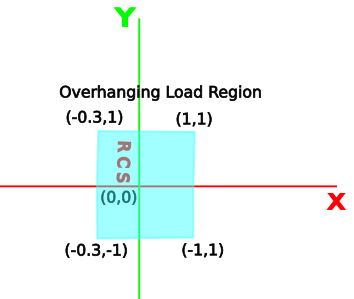
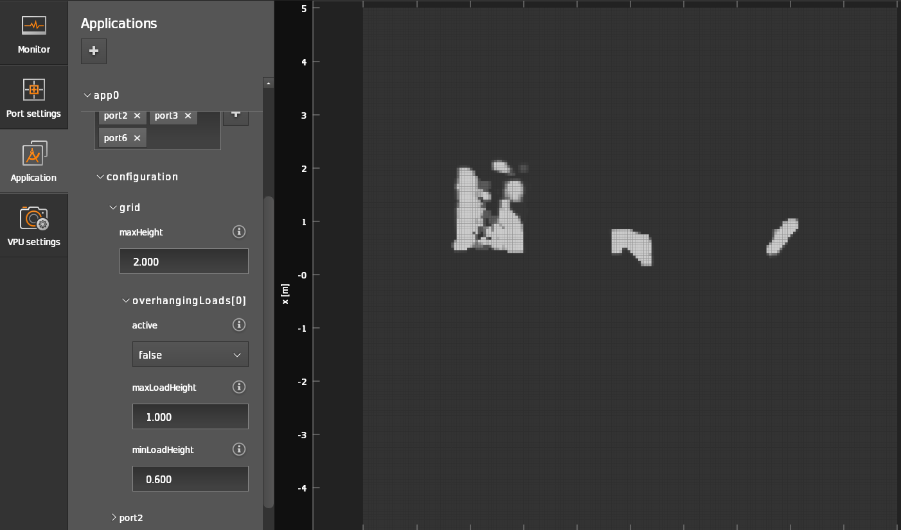
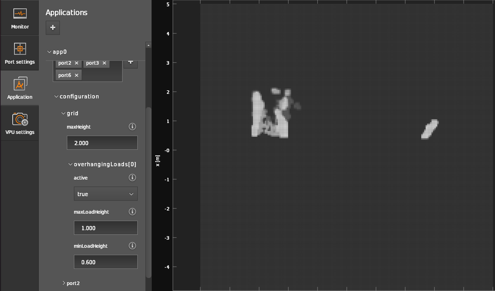

Overhanging loads
This feature introduces the possibility to define a static region in the user coordinate system which will be then excluded from the obstacle detection.
Note
Feature added in firmware version 1.0.14.
Use case
For load-carrying AGVs a typical scenario exists where the load intersects with the FOV of the camera causing false positives in the occupancy grid. These false positives negatively impact the performance of ODS, as an obstacle will be constantly reported in place of the load.
To mitigate this effect, the overhanging loads feature was introduced to exclude specific geometric region from the ODS measurements. Only false positives originating from this geometric region can be reliably excluded by the overhanging load feature.
Prerequisites
A reasonable accuracy in the extrinsic calibration is a pre-requirement for this feature.
Limitations: impact of stray light artifacts
Stray light designates light that is reflected on bright surfaces and scattered around the optical system, impacting the TOF measurements. Stray light is typically caused by objects in the close range or very bright objects just on the edges of the field of view. While the O3R has a very robust embedded stray light filter that mitigates most of the stray light artifacts, some disturbances can still be seen, and can occur when using overhanging loads. One can think of this as the camera being partially blinded by the light reflecting on the load.
What this means, in terms of ODS measurements, is that “difficult objects,” that is low reflectivity, small, or far away objects, will be detected with degraded performances compared to a setup with no overhanging load. This is especially true if the load is relatively close to the camera.
Stay light impacts the whole image, and not exclusively the area where the load is located. To mitigate this, it is recommended to configure the overhanging load shape to be larger than the object itself. Considering how variable the impact of stray light can be depending on where the load is located and on the material of the load itself, no generic recommendations can be given as to the size of the load that should be configured. The user is expected to test their specific setup and adjust accordingly.
Definition
In the context of ODS, and overhanging load is any object that:
is visible in one of the camera’s FOV,
is static with respect to the robot coordinate system (RCS).
Warning
The overhanging load feature is designed exclusively to exclude static (w.r.t to the RCS) objects from the ODS calculation. Using it for any other use case might significantly reduce performances.
The overhanging load is defined as a 3D shape by a 2D convex hull of 3 to 6 points in the XY plane, in conjunction with a minimum and maximum height parameter for specifying its Z range. A pixel is excluded if and only if the corresponding pixel-camera ray intersects with the 3D exclusion region.

How to configure
The configuration parameters for the overhanging load feature are placed in the grid section of the ODS JSON:
{"applications":{
"instances":{
"app0":{
"configuration":{
"grid":{
"overhangingLoads":[{
"active": true,
"maxLoadHeight": 0.4,
"minLoadHeight": 1.0,
"region": [[-1.5, -2.0], [1.5, -2.0], [1.5, 2.0], [-1.5, 2.0]]
}]
}
}
}
}
}}
The overhangingLoads is an array of up to 16 different loads.
Note
The user is expected to configure all the necessary loads for the application, and to toggle the active parameter to true for the loads that are present at runtime. This is a more efficient approach than re-configuring load dimensions at runtime to accommodate a new type of load.
For each load, consider the following parameters:
The feature has to be activated:
{"active": true}.The
minLoadHeightparameter defines the lowest Z value of the region. This parameter should not be confused with theminObjectHeight(see here) that defines a minimum object height for the floor segmentation. SettingminLoadHeightto zero will result in some ground pixels being excluded, which in turn might results in detecting no usable floor for the visual odometry if the load is too large. In the example above, the bottom of the overhanging load is configured at 40 cm.The
maxLoadHeightdefines the maximum Z value of the region. In the example above, the top of the overhanging load is configured at 1 m.The
regiondefines the (x, y) coordinates of the 3 to 6 corners of the convex hull that defines the overhanging load.
Configuration in ifm Vision Assistant

Example
In the following test setup, a flat wooden piece, simulating an overhanging load, is intersecting with the FOV of the cameras on the AGV, resulting in a false positive detection, the load being considered an obstacle.

After defining and activating the overhanging load region feature, the load is ignored.
Overhanging load feature: Inactive |
Overhanging load feature: Active |
|---|---|
 |
 |